Advance Tutorial 07: Turret
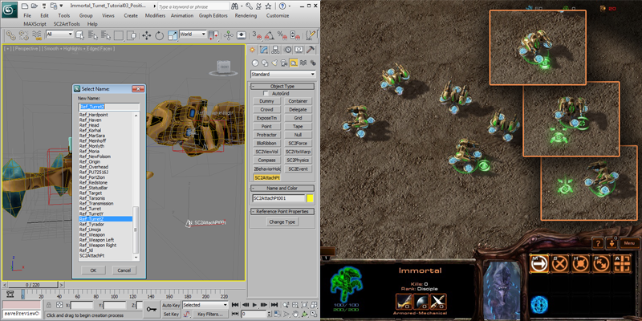Starcraft II supports a very simple method of procedurally animating a single axis rotating turret for units with the correct turret data assigned. This tutorial will demonstrate setting up the turret nodes correctly with an alternate Immortal model called the Hovortal. The Immortal already has the turret data assigned and it also setup in data to not rotate making the turret example very easy to see. Turrets cannot be seen in the cutscene editor and must be tested on a map with Liberty.sc2mod data in game.
Getting Started
-
Open 'Hovortal_Turret_Tutorial01_Start.max' It contains a new immortal unit that is split into two parts, a base and a turret complete with all animations and effects. They lower base is separated from the turret for now, but we will link them together with a turret. It is recommended to use World Reference Coordinates and Use Pivot Point Center in 3dS Max for this tutorial.
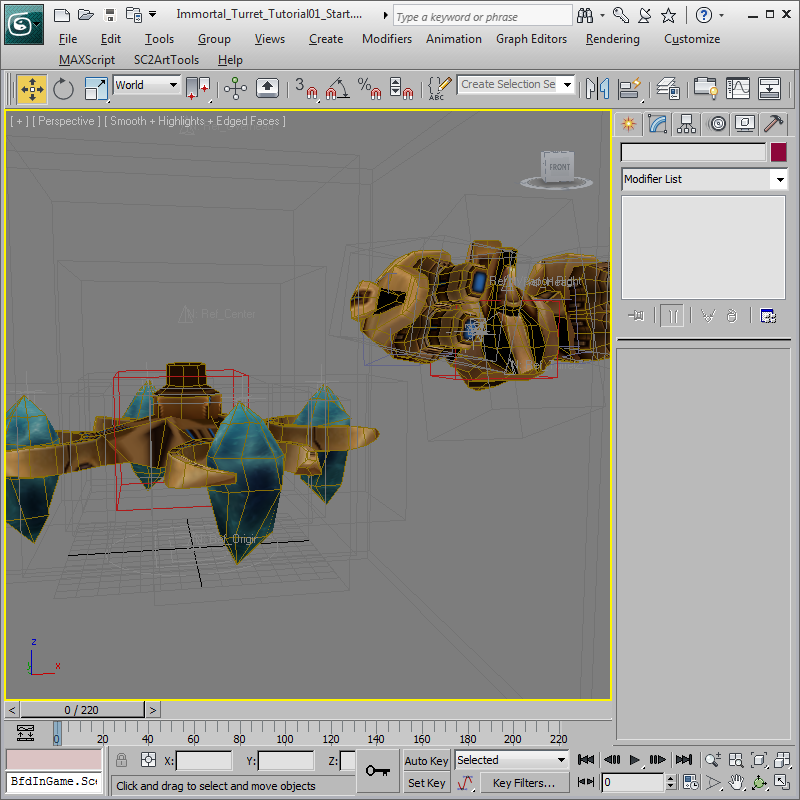
Create a Turret Bone
-
SC2ArtTools require two nodes be placed and linked together to make a single turret. The first node is bone with no animation that has the pivot of the node centered on where the turret will rotate. Create a Box with a 20 x 20 x 20 size with the name 'Bone_Turret'.
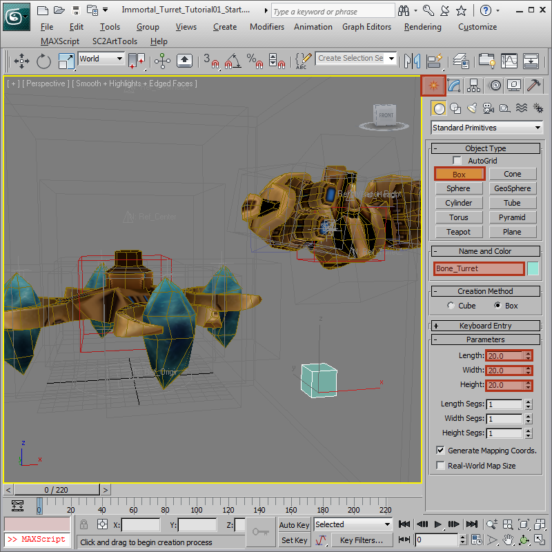
Position the Turret Bone
-
Bring up the Move Transform Type-In by right clicking the Select and Move and type the values of 0, 0, 100 into the Move Transform Type-In.
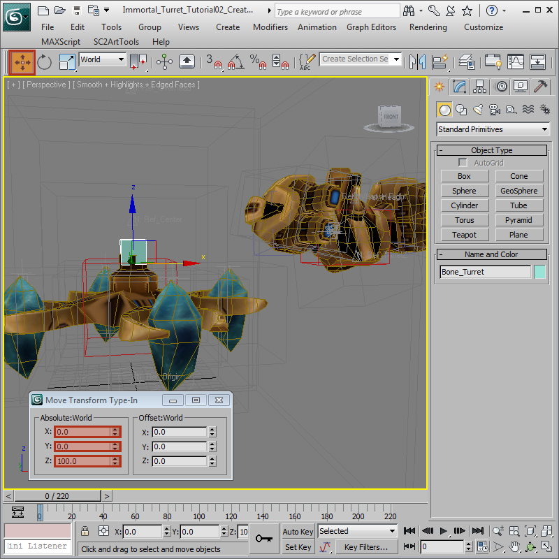
Link the Turret Bone to the Base
-
Link the Bone_Turret to the existing red Bone_Root using the Select the Link tool from the Tool Bar.
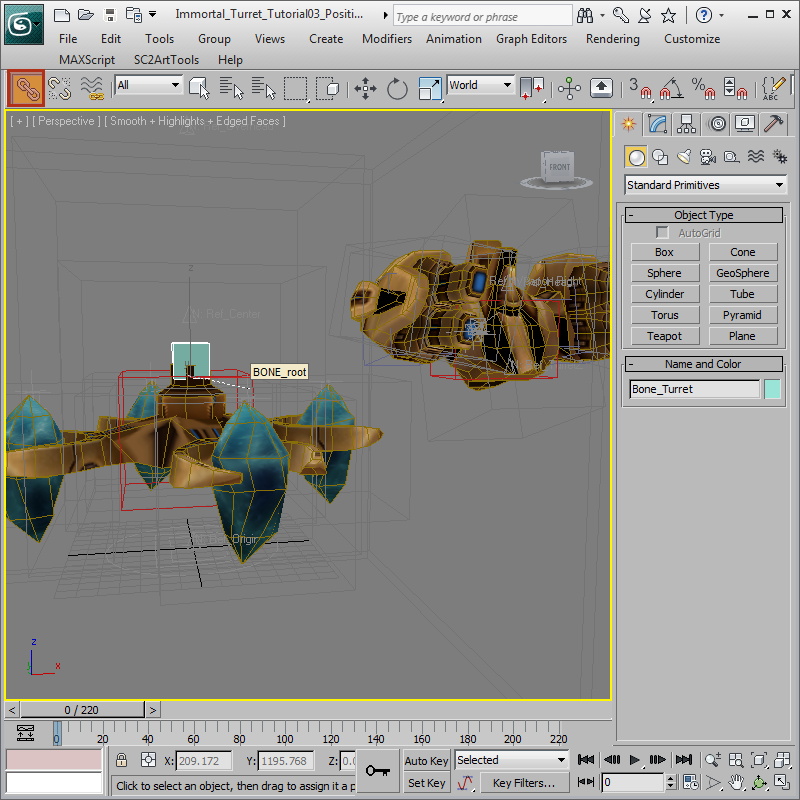
Create the Ref_TurretZ Attachment Point
-
The second node to make a working turret is the procedurally rotated Attachment Point which has identical position and rotation to the parent Bone_Turret. Create an Attachment Point from 'Create Menu > Helpers > SC2AttachPt' and select Change Type to Ref_TurretZ and place it in the scene.
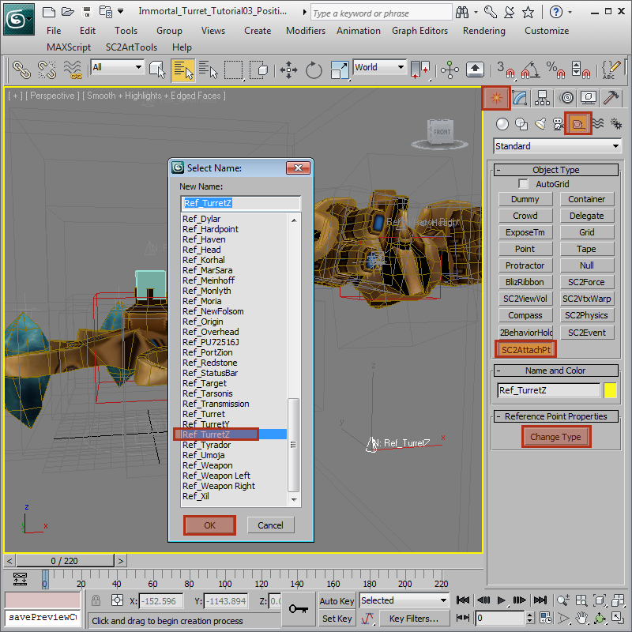
Position the Ref_TurretZ Attachment Point
-
With the Ref_TurretZ selected use the Move Transform Type-In move the Ref_TurretZ to 200, 0, 100. This will position the attachment point at the bottom of the Turret of the Hovortal.
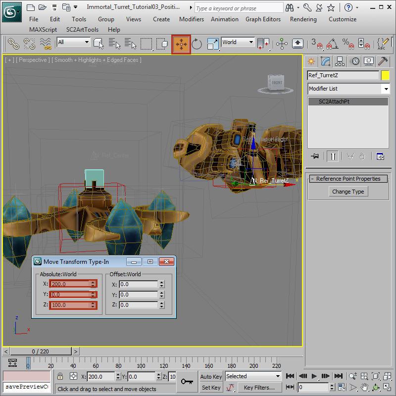
Link the Ref_TurretZ Attachment Point
-
Link the existing red Bone_Chest to the Ref_TurretZ using the Select the Link tool from the Tool Bar. Also link the Ref_TurretZ to the Bone_Turret.
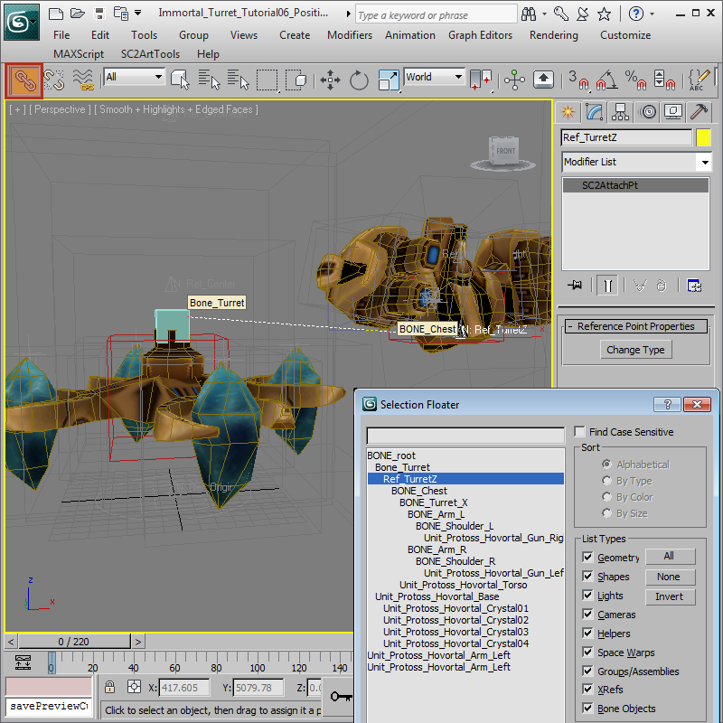
Align the Ref_TurretZ Attachment Point
-
With the new Ref_TurretZ selected, use the Quick Align tool and select the Bone_Turret. This will move the turret into the correct position completing the model.
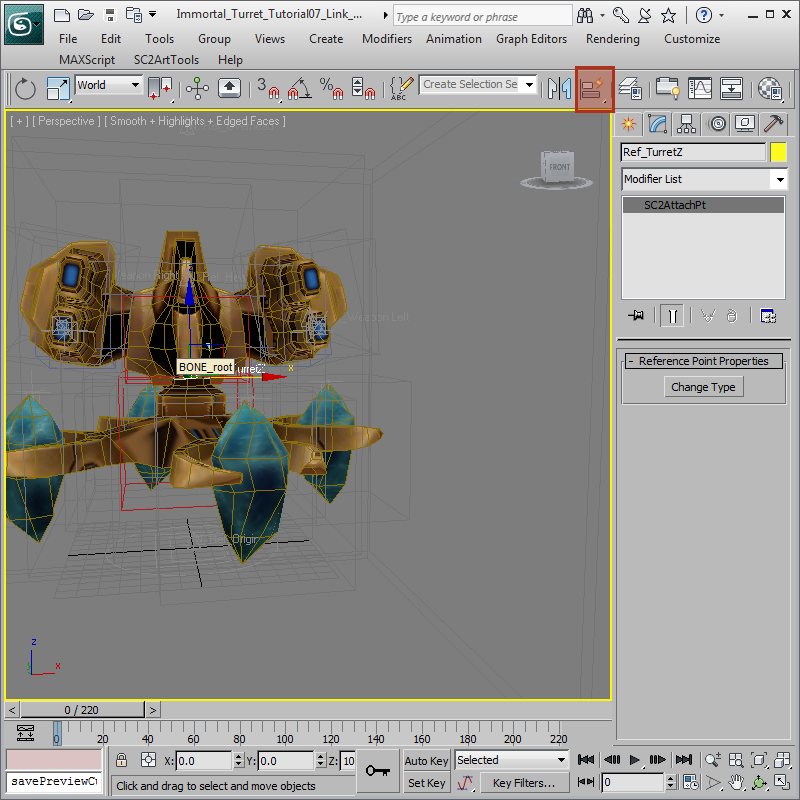
Save Model to a Mod
-
To see the turret in action we need to get the model in the game. Follow the directions in the Committing Models Tutorial and make a new Mod named Hovortal.SC2Mod, save it and close the mod. Rename this 3ds Max file to 'Hovortal.max' and commit the model to the new Mod using SC2ArtTools > Commit > Commit. In the StarCraft II Editor create a new Arcade Map and add the custom dependency Hovortal.SC2Mod.
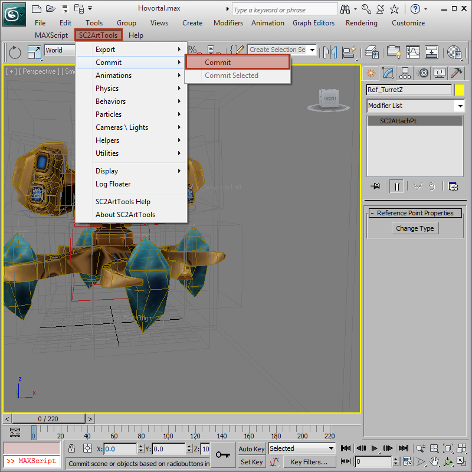
Edit Immortal Data to change to Hovortal
-
In the new map, edit the Immortal Model Data to Point to the new model.
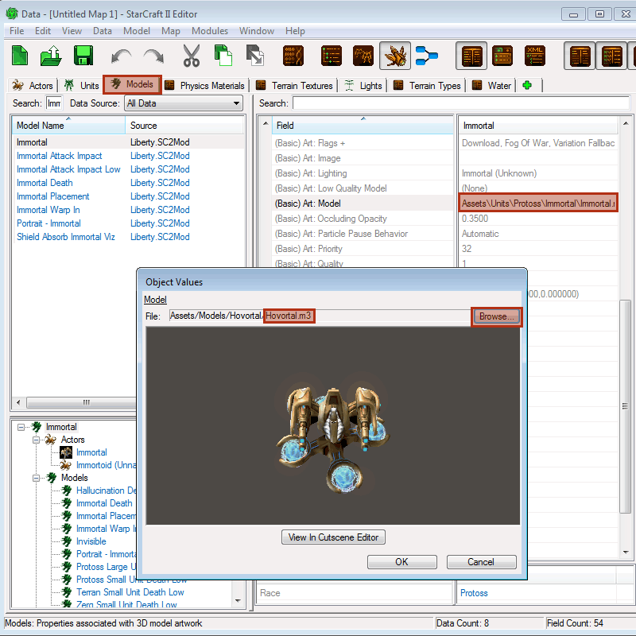
Place Hovortal on the Map
-
Place some new Immortals on the map.
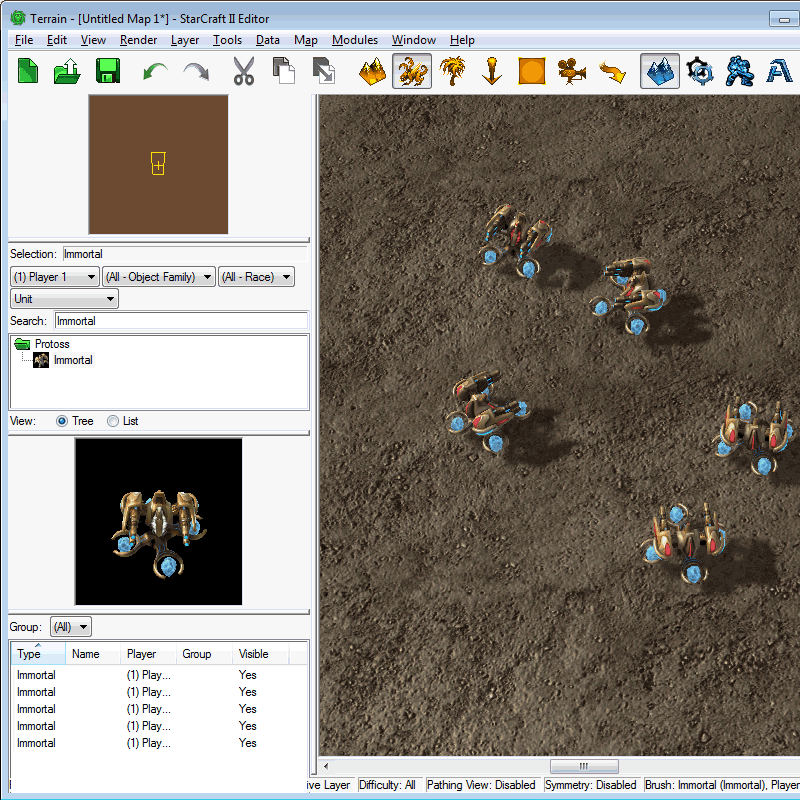
Final Result
-
In the Editor select Test Document. This should launch a map with only some Hovortals to play with. Notice how the base doesn't rotate but the turrets do.
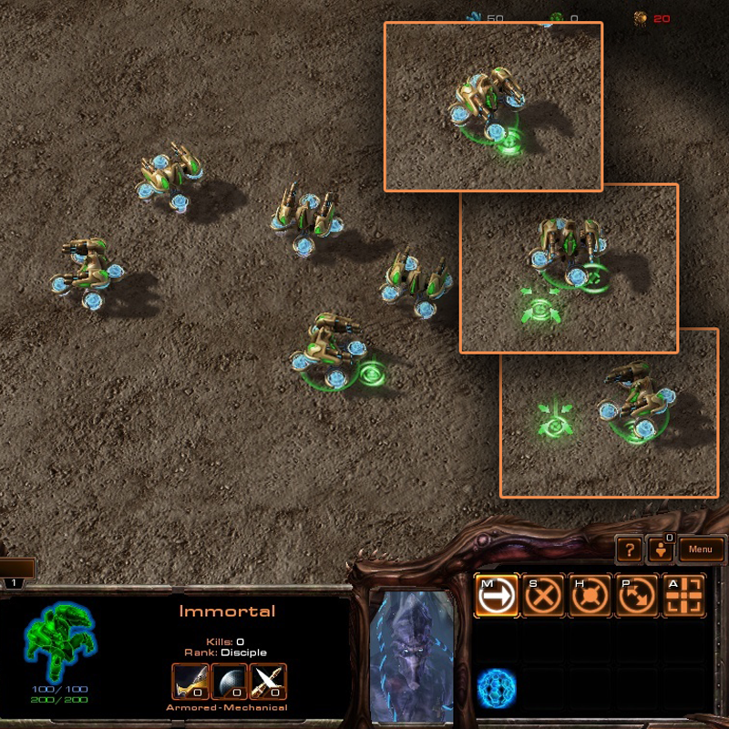